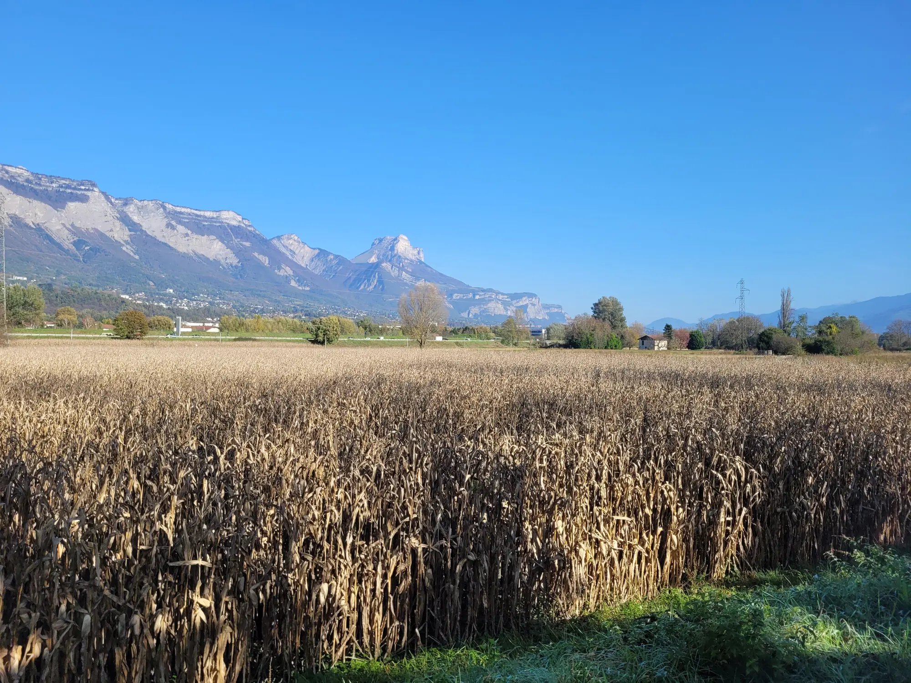
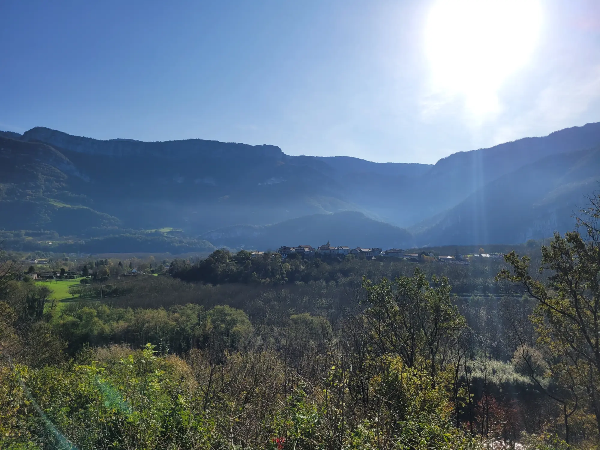

Remise en selle
Retrouver le plaisir du vélo
Vous n'êtes pas monté sur un vélo depuis des années, ou vous hésitez à vous lancer avec l'électrique ? On reprend tout depuis le début, ensemble et sans pression.

Pourquoi reprendre ?
Le vélo se pratique à tout âge. Bien accompagné, il redevient vite un plaisir simple.
Garder la forme
Une activité douce pour les articulations, à l'intensité que vous choisissez.
Retrouver son autonomie
Faire ses courses, rendre visite à des proches, aller au marché, sans dépendre de la voiture.
Partager des sorties
Rouler en petit groupe, découvrir les environs, s'arrêter pour un café.
Pas à pas
On avance séance après séance, à votre rythme. Aucune condition physique particulière n'est demandée.
Faire le point
On parle de vos envies et de vos appréhensions, et on règle le vélo à votre taille.
Se remettre en selle
Dans un lieu calme, à l'écart de la circulation : démarrer, freiner, tourner.
Apprivoiser l'électrique
Démarrer en douceur, doser l'assistance, anticiper les freinages.
Circuler sereinement
Choisir ses itinéraires, se placer sur la chaussée, traverser un carrefour.
Partir en balade
Des sorties conviviales sur les voies vertes, avec des pauses.

Mobilité réduite
Un vélo pour chacun
Tricycle, tandem, vélo couché, vélo-fauteuil : il existe des vélos adaptés à de nombreuses situations. Chaque accompagnement commence par un échange pour comprendre vos besoins, puis on essaie ensemble ce qui vous convient.
Le matériel adapté peut être loué auprès de structures spécialisées : on organise ça ensemble.
Vos questions
Je n'ai pas fait de vélo depuis trente ans, est-ce possible ?
Oui, c'est exactement pour cela que ces séances existent. On recommence tout depuis le début, dans un endroit calme.
Je ne suis pas sûr de pouvoir pédaler longtemps.
Le vélo à assistance électrique est fait pour vous. Et on adapte toujours la durée et la distance à chaque séance.
Peut-on venir à deux ?
Bien sûr, à deux ou en petit groupe d'amis : c'est souvent plus motivant.
Intervenez-vous en résidence seniors ?
Oui, sur demande. Voir la page Groupes et structures.